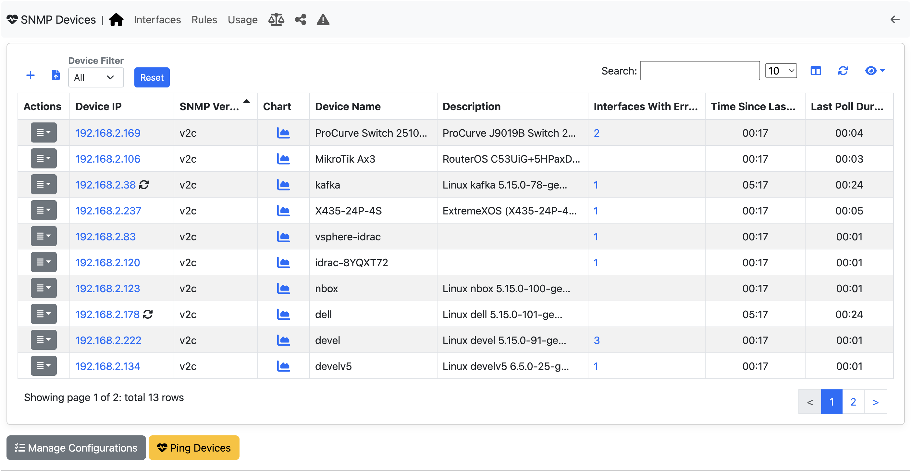
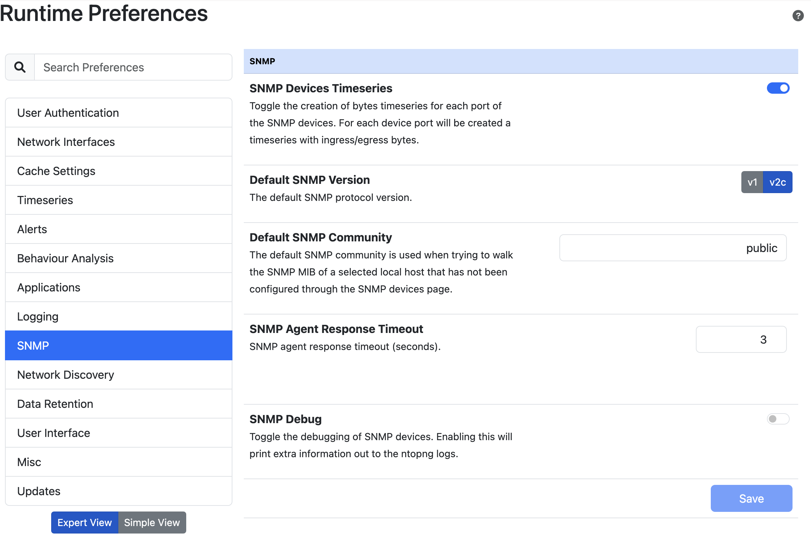

Конфигурация и обнаружение
Вы можете настроить одно устройство или обнаружить устройства в подсети, нажав значок «+» и заполнив форму ниже.

Альтернативно вы можете импортировать файл JSON или файл CSV, содержащий конфигурацию устройств, щелкнув значок импорта ( ).
).

ntopng затем обнаружит все активные устройства SNMP, добавив их в список устройств.

Устройства опрашиваются автоматически каждые 5 минут, и временные ряды создаются, если это включено в настройках, где вы также можете указать сообщество по умолчанию SNMP.

SNMP Импортировать файл
Импортируемый файл конфигурации устройства SNMP должен быть либо массивом JSON, либо CSV. Формат этих двух файлов различен; в случае CSV файл должен быть отформатирован с использованием 1 устройства SNMP в строке, а данные должны быть в следующем порядке в случае SNMP v.1 или SNMP v.2c (оставьте пустые значения, если значение не требуется):
DEVICE_IP,READ_COMMUNITY,WRITE_COMMUNITY,VERSION
Вместо этого для SNMP v.3:
DEVICE_IP,READ_COMMUNITY,WRITE_COMMUNITY,VERSION,LEVEL,USERNAME,AUTH_PROTOCOL,AUTH_PASSPHRASE,PRIVACY_PROTOCOL,PRIVACY_PASSPHRASE
Пример:
192.168.2.1,public,,3,hello,ntop,md5,hello,,, (v3)
192.168.2.222,public,,2 (v2c)
Вместо этого для JSON следуйте примеру одного экспортера по ntopng на этой же странице, например:
{
"modules": {
"snmp": {
{
"ip_address":"192.168.2.38",
"version":"2c",
"community":"public"
},
{
"ip_address":"192.168.2.0/24",
"version":"2c",
"community":"public"
}
}
}
}